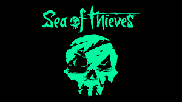
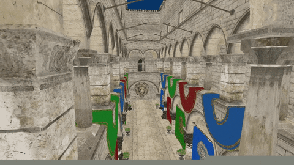
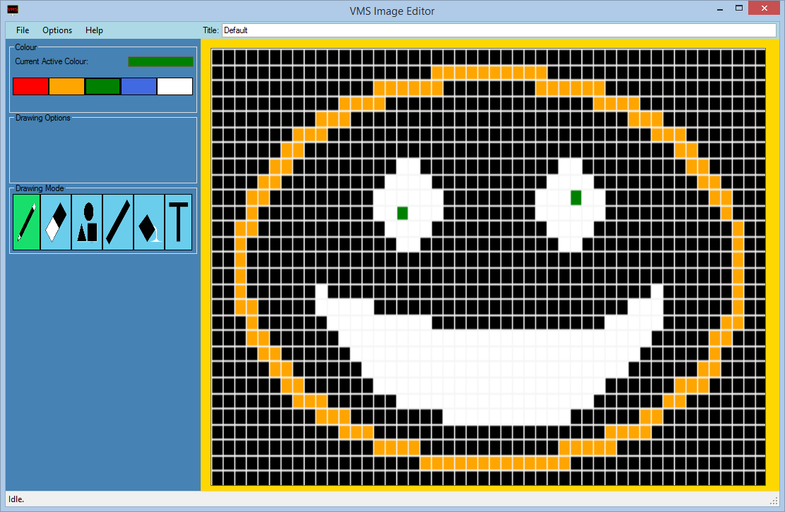
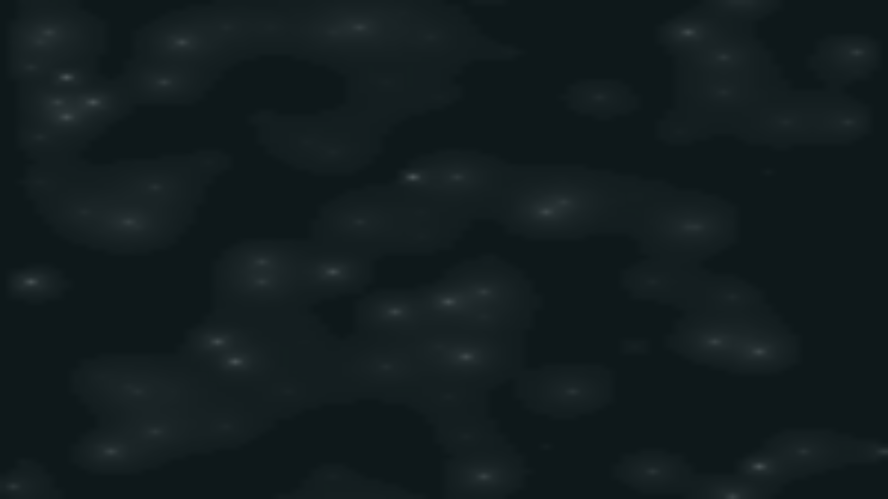

Portfolio
Sea of Thieves

I currently work as a software engineer II on the gameplay team.
Game Engine for Fun

A game engine written in C++ to learn more about low level / internal workings of a game engine and the architectural challenges.
VMS Image Editor

A desktop application written in C# for creating images to be displayed on VMS’s
Beaudrops

An experiment in webgl to model rain drops landing in a puddle as cellular automata.